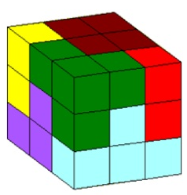

考えて、動かして、完成させよう
8088通りの解を持つ立体パズルに挑戦！！
7色のブロックを組み合わせて
3×3×3の立方体を完成させるゲームです

まずは見て、試してみよう
自分の力で挑戦しよう
ゲームプログラムの開発経緯
作者は9年前にこのパズルには8088通りの解答があることをホームページ（右下参照）で発表しました。その時以来これは3次元のゲーム化が出来ると信じていましたが、スマホでも動くプログラミング能力はなく、Python,Javascriptなどの言語習得を目指すもその都度挫折し実現出来ずに今日に至りました。昨今AIの進歩によりAIがプログラミングの代行をしてくれるようになりました。3週間前からChatGPTとの対話を何百回も重ね、遂にゲームとしての形が出来上がりました。84歳の老人にとってこのゲームを作ることは一種の認知症予防策でした。同年輩の皆さまがこのゲームをプレイすることによって、認知症予防に役立てば望外の喜びです。